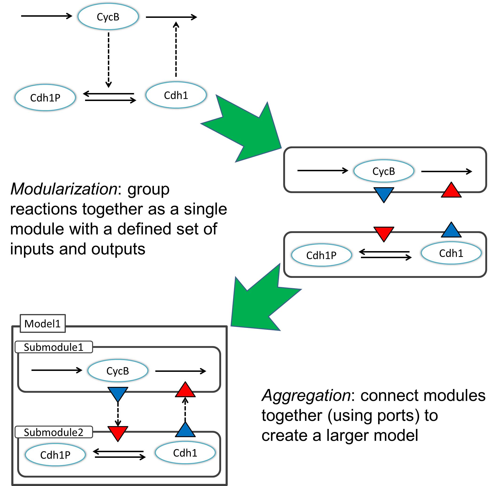

The ever-growing size and complexity of molecular network models makes them difficult to construct and understand. Our approach to modeling is to build large models by combining together smaller models, making them easier to comprehend. At the base, the smaller models (called modules) are defined by small collections of reactions. Modules connect together to form larger modules through clearly defined interfaces called ports. We present the JigCell Model Connector, a software tool that supports large-scale molecular network modeling.
The Process

Features
- Construct large models by connecting smaller modules together.
- Create a module template and import it multiple times.
- Complete models can be saved and later imported as submodules.
- Import models in Systems Biology Markup Language (SBML) format.
- Export valid models in SBML format, using the new SBML Hierarchical Model Composition and Layout packages.
- Once exported, the SBML files can be imported into COPASI for further analysis.
Publications
- (full publication) in preparation
- (poster) International Conference on Computational Cell Biology (ICCCB), August 2013, Blacksburg, Virginia, USA
Contents